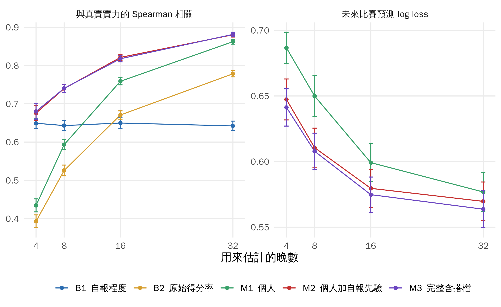

01專題摘要
指引要求：組別、題目、使用者、痛點、方法、主要成果與限制，約 150 至 250 字。
政大體育館的排球野場分為晚餐場與消夜場，每晚約有 4 到 6 隊、每隊 4 到 6 人輪流上場。目前多半是現場臨時湊隊，常出現強弱懸殊、一面倒的比賽，讓程度較弱的球員上場體驗不佳，強隊也打得不盡興。
本專題設計一套野場報名與分隊系統：報名時填寫自評程度，系統依過去比賽結果估計每位球員的實力，再自動分隊。我們以模擬資料比較三種分隊方法（隨機、依自評程度、依估計實力），以局分差與「分差在 3 分以內的比例」衡量比賽是否勢均力敵。
主要成果：待補，填入模擬比較的關鍵數字與區間
限制：沒有真實野場紀錄，實力模型與分隊效果都在模擬情境下驗證；職業比賽公開資料只用來設定模擬參數。
02問題與使用者
從痛點收斂成一個可以用資料檢驗的問題。
使用者
晚餐場、消夜場的野場參加者，以及負責排隊、分隊的召集人。
痛點
臨時分隊強弱不均、比賽一面倒；常和同一批人同隊；新來的人不知道自己該排哪裡。
可檢驗的問題
依比賽結果估計實力後分隊，是否比隨機分隊或依自評程度分隊，產生分差更小、更勢均力敵的比賽？
成功指標確認門檻
| 指標 | 定義 | 比較對象 | 合理門檻 |
|---|---|---|---|
| 平均局分差 | 每局兩隊得分差的平均，附 95% 區間 | 三種分隊方法，同一模擬情境 | 待補 |
| 接近比賽比例 | 分差 ≤ 3 分的局數比例 | 同上 | 待補 |
| 實力估計準確度 | 估計實力與模擬真實實力的相關、區間涵蓋率 | 不同比賽場數 | 涵蓋率接近 95% |
03資料
公開資料用來設定模擬參數，模擬資料用來驗證模型與比較分隊方法。
| 資料 | 來源與授權 | 用途 | 連結 |
|---|---|---|---|
| 職業／大學排球比賽紀錄確認資料集 | 待補（來源、下載日期、授權） | 估計得分率、攻擊成功率等模擬參數 | 資料來源說明 |
| 模擬野場資料 | 本專題自行生成，生成規則見程式 | 已知真實實力，用來驗證模型與比較分隊方法 | 生成方式 |
模擬情境
- 每晚 4 到 6 隊、每隊 4 到 6 人，分晚餐場與消夜場。
- 每位球員有一個隱藏的真實實力，自評程度帶有誤差。
- 至少兩種測試情境待補，例如：人數多寡、新人比例高低
資料字典：docs/data_dictionary.md待補
04方法
R 負責實力評分模型，Python 負責報名、分隊與模擬比較。
R：實力評分模型
以每局勝負與分差估計球員實力（Bradley-Terry／邏輯斯迴歸類型），加入收縮避免比賽少的球員估計過度極端；可延伸估計搭檔默契。
輸入：每局名單與比分 CSV 輸出：球員實力估計與區間
Python：報名與分隊
報名、程度分級，並實作三種分隊方法：隨機（基準）、依自評程度、依估計實力平衡總分。以大量重複模擬比較結果。
輸入：報名名單與實力估計 輸出：分隊結果、模擬比賽紀錄
兩種語言如何銜接
Python 產生模擬比賽 → R 讀入估計實力 → Python 讀回實力估計做分隊比較。檔案格式與欄位見 重現說明。
流程圖
05作品展示
可操作的分隊原型與操作說明。
06結果
呈現效果大小與不確定性，不只報平均值。

比較摘要待補數字
| 分隊方法 | 平均局分差（95% 區間） | 分差 ≤ 3 比例 | 備註 |
|---|---|---|---|
| 隨機（基準） | — | — | |
| 依自評程度 | — | — | |
| 依估計實力 | — | — |
測試摘要待補
- 已知答案測試：模擬實力已知，檢查估計是否還原。
- 邊界情境：只有 1 人報名、人數無法整除隊數、全員同程度。
- 完整測試紀錄：docs/tests.md
限制
結果只在模擬情境下成立，實際野場的實力變化、出席不穩定、位置需求等因素未完全納入。
07程式與重現
依 README 可從原始碼重跑主要結果。
- GitHub repo：待補 repo 連結待補
- 交件版本：tag
final-v1.0，commit待補 - 重現說明：repro/README.md
- 環境設定：
renv.lock（R）、requirements.txt（Python）
08AI 協作
記錄想法如何形成、何時採納 AI 建議，以及如何驗證。
Agent 工作流程
- Define
- Plan
- Review
- Code
- Test
- Reflect
09報告、簡報與影片
10分工與合作歷程
1 人組以自我檢核與外部同學試跑補足交叉檢查。
| 成員 | 負責項目 | 對應成果 | 審查人 |
|---|---|---|---|
| Iris | 全部項目 | 本網站所列成果 | 外部試跑同學待補 |
歷程與決策紀錄持續補充
| 日期 | 方式 | 決定事項 | 理由 |
|---|---|---|---|
| 2026-11-26 | 與 AI 討論 | 題目定為野場排球報名與分隊；只用公開資料與模擬資料 | 無法取得真實野場紀錄，模擬資料可驗證已知答案 |
| — | — | — | — |
完整紀錄：docs/meetings.md
11公開與引用
- 引用來源與素材授權：docs/licenses.md待補
- 公開範圍：網站、程式與模擬資料公開；不含任何真實球員個資。
- 已知問題：待補
- 檔案清單：Gxx_manifest.csv